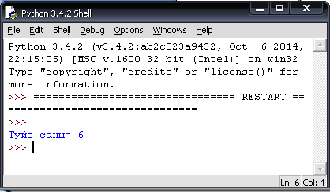

Астанамыз
Нұр-сұлтан қаласында арнайы шынылармен әйнектелген «Бәйтерек» алтын шарының
диаметрі 22 м. Шардың көлемін табатын программа құрамыз.
Шардың v- көлемі  формуласымен
есептеледі, мұндағы - 3,14 -–ке тең. Ал, шардың диаметрі d=2*r, демек, радиусы
r=d/2 5). Программаны салыстырмалы түрде С++ және Python программалау
тілдерінде құрамыз.
формуласымен
есептеледі, мұндағы - 3,14 -–ке тең. Ал, шардың диаметрі d=2*r, демек, радиусы
r=d/2 5). Программаны салыстырмалы түрде С++ және Python программалау
тілдерінде құрамыз.
Программаның Python программалау тіліндегі нұсқасы 1, 2-суретте
көрсетілген.
|
Сурет 1- Шардың көлемін есептеу
Сурет 2 - Алынған нәтиже
Осы есептің С++ программалау тіліндеде шығарылу жолын
көрсетейік (3,4-сурет). Мұнда айнымалылардың типтерін көрсетеміз. V айнымалысы
нақты тип, d айнымалысы бүтін тип. <iostream> модулі арқылы cout шығару
операторы және <stdio> модулі арқылы printf шығару операторы пайдалануға
болады.
|
Сурет 3
- C++ программалау тілінде шардың көлемін есептеу
Сурет
4 -Алынған нәтиже
Асыл
дініміз бойынша, төрт түліктің төресі ретінде жүйрік жылқыдан гөрі төзімді түйе
қасиетті, әулие саналған. Ойсыл қараның бас сүйегін бөлмей, лақтырып тастамай,
ағаш басында әспеттеп сақтаудың мәнісі де сол. «Түйесі бардың – киесі
бар» дейді. Түйешіні «ұлық баққан» деп құрметтеп, оған көпшілік жиналған жерде
төрден орын берген. Өйткені түйе – ұлық жануар.
Әрбір түйе төрт қап жүк көтереді. Түркістаннан Отырарға
дейін жиырма екі қап жүкті апару үшін қанша түйе қажет екенін есептейтін
программа құрайық. Программаны салыстырмалы түрде С++ және Python программалау
тілдерінде құрамыз.
Python
программалау тіліндегі есептің программа коды 5,6-суреттерде келтірілген. Мұндағы
t айнымалысы – әрбір түйенің көтеретін жүгі, ал k- айнымалысы жиырма екі
қапты төрт қапқа бөлгендегі бөлінді. Round дөңгелектеу функциясы.
|

Сурет 5 - Түйе санын есептеу

Сурет 6 - Алынған нәтиже терезесі
Есептің С++ программалау тілінде программа коды 7, 8-суреттерде берілген.
|
Сурет 7 - C++ программалау тілінде түйе санын есептеу
8-сурет.
Алынған нәтиже
Ағаш
уықты, киіз туырлықты ауыл үйінің бас-аяғы он жеті бас малы - жылқысы, сиыры,
қойы болыпты. Үйдің ер-азамат болып қалған баласы дамыл таппай жүріп, қыстау
басына мая – мая шөп жинап алады. Қыс түсіп, мал қолға қараған кезде ол
анасынан әр түлікке қанша баудан шөп салайын, деп сұрайды.
- Күн сайын әр жылқының алдына - алты, әр сиырға - төрт, қой
басына екі баудан салсаң, мал қыстан қысыла қоймайды, балам.
- Жәрайды апа, - деп бала малдарға шешесінің айтқанындай етіп,
бау-бау шөпті салып келеді.
- Барлык малға қанша бау шөп салдың, балам? -дейді шешесі ұлына.
- Бәріне қырық сегіз бау шөп кетті, - дейді баласы,
- Барлық жылқыға қанша бау салсам, барлық сиырға да сонша бау
салдым, апа. Ал жылқы мен сиырды қоса есептегенде барлығына кеткен бау саны
барлық қойға салынған бау санымен бірдей болды.
- Дұрыс болған екен балам, - дейді шешесі сонда,
- Енді шөпті малдарға күнде осылай салып тұрғайсың.
Бұл үйдің неше жылқысы, неше сиыры, неше қойы болғанын
есептейтін программа құрайық.
Есепке нұсқаулық. Барлық
жылқыға салынған бау санын шартты түрде «бір есе» деп алсақ, барлық сиырға да
сонша бау (бір есе), ал барлық қойға — жылқы мен сиырды қоса алғанда кеткен бау
санындай (екі есе) шөп кетеді. Яғни, барлық малға «төрт есе» шөп салынады — бұл
қырық сегіз бау. Ендеше «бір есе» дегеніміз — он екі бау. Олай болса, барлық
жылқыға он екі бау (бір есе), сиырларға да осынша (он екі бау), барлық қойға
жиырма төрт бау (екі есе) шөп кеткен. Енді есеп шартын ескерсек (жылқы басына
алты бау, әр сиырға төрт бау, әр қойға екі бау шөп салынған), есептің жауабы
шығады. (Жауабы. Екі жылқы, үш сиыр, он
екі қой)
Берілген есептің Python программалау тілінде программа коды 9,
10-суреттерде берілген.
|
Сурет 9
- Жылқы, сиыр және қойдың санын есептеу
Сурет 10 - Алынған нәтиже
Берілген есептің С++ программалау
тілінде программа коды 11, 12-суреттерде берілген.
|
Сурет 11 - C++ программалау тілінде жылқы, сиыр және қойдың
санын есептеу
Сурет 12 - Алынған нәтиже